【サカつくTV #10】Ver2.2アップデート情報まとめ｜アクセサリー・ボーナスカウント・新ガチャ・ピザーラコラボ
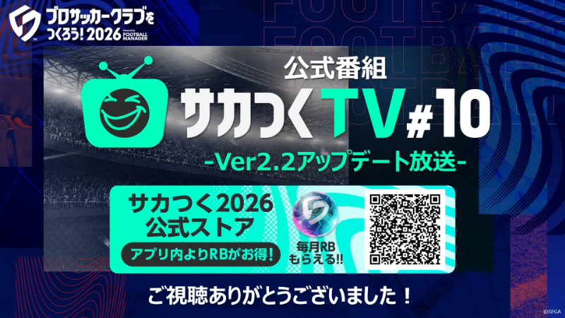
2026年8月24日に放送された公式番組「サカつくTV #10」では、8月26日実装予定のVer2.2アップデートを中心に、新イベント、新ガチャ、公式ストア、ピザーラコラボなど多数の情報が発表されました。本記事では番組内スライドと発表内容を整理し、特に重要なボーナスカウントとアクセサリーの仕様を攻略目線で詳しく解説します。
本記事は公式番組「サカつくTV #10 Ver2.2アップデート放送」の発表内容と、番組内で公開された公式スライドをもとに作成しています。上の動画はページ内でそのまま再生できます。
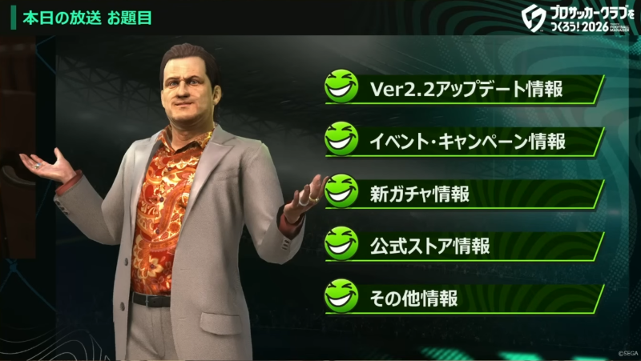
- ボーナスカウントが追加。サカつくモードのシーズン終了時に消費してアクセサリーや強化ポイントを獲得
- アクセサリーでSP選手を外付け強化。追加効果・セット効果・意識変化まで含めた厳選要素が追加
- 直接オファー成功率と継承を大幅調整し、理想の選抜選手を作りやすくする方向へ
- 9月にサカつく2026検定とサカつくコイン交換所を予定
- スペインプレミアムSP選手スカウトにラミン・ヤマル、パウ・クバルシ、ガビ、ウナイ・シモンが登場
- 9月2日からスペシャルピックアップ特練カードガチャを開催予定
- ピザーラ×サカつく2026の全国コラボを9月下旬に予定
- 次回9月放送では、2027年1月頃までのロードマップ公開を予定
Ver2.2アップデート情報｜8月26日実装予定
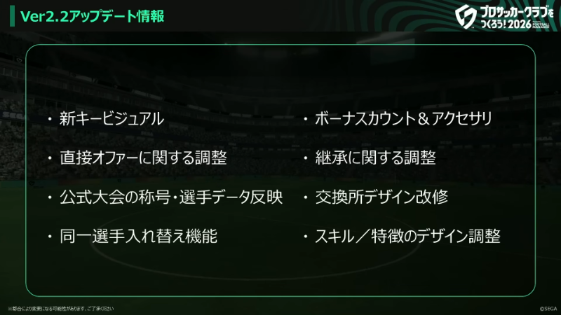
Ver2.2は、単なる操作性改善だけでなく、選手育成の新しい軸を追加するアップデートです。番組内で紹介された主な内容は次の通りです。
日本代表選手を起用した新ビジュアルへ変更
サカつくモード周回とSP選手強化をつなぐ新要素
スカウトパワーと成功率のバランスを改善
継承目的の選手育成を進めやすく変更
称号と大会出場者の選手データを実装
交換所、同一選手入れ替え、スキル／特徴表示を改善
キービジュアルが日本代表仕様に更新
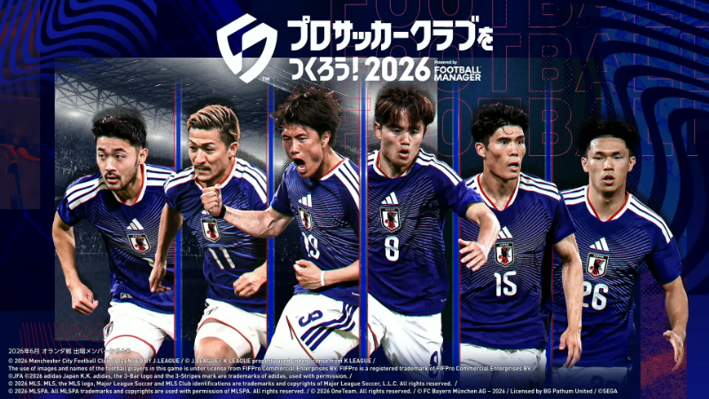
ゲームのキービジュアルも更新されます。番組では、2026年6月のオランダ戦に出場した日本代表メンバーから6名を起用したビジュアルとして紹介されました。
新機能「ボーナスカウント」｜1個ずつ使うほど効率が高い
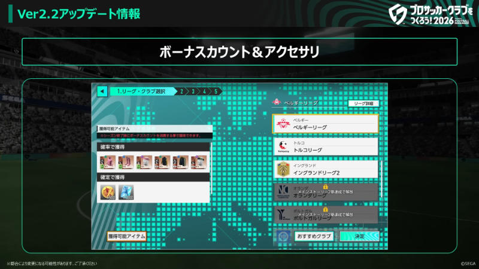
ボーナスカウントは、サカつくモードのシーズン終了時に消費できる新しいリソースです。消費することで、主にアクセサリー・選手強化ポイント・トレーナー強化ポイントを獲得できます。
| 項目 | 番組で発表された仕様 |
|---|---|
| 回復 | 毎日午前4時に3回復 |
| 自然回復の保有上限 | 5 |
| 使用タイミング | サカつくモードのシーズン終了時 |
| 主な報酬 | アクセサリー／選手強化ポイント／トレーナー強化ポイント |
| 複数消費 | 可能。ただし1個ずつ消費する場合より獲得効率は下がる |
まとめて使えば時短、1個ずつなら報酬効率重視

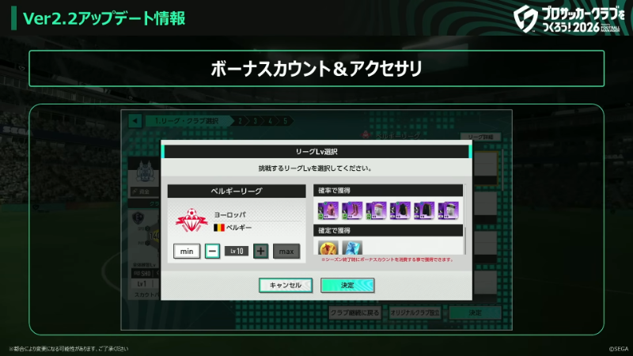

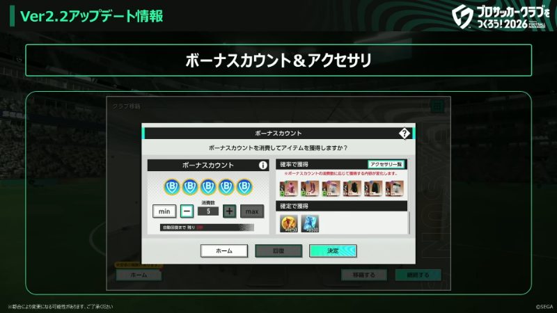
番組内の実機説明では、ポイント報酬を例に1個消費なら1000、5個まとめて消費すると2500という例が示されました。つまり、時間があるなら1シーズンごとに1個ずつ消費する方が総獲得量は多くなります。
効率最優先なら「1個ずつ消費」が基本になりそうです。一方、平日に何周もできない場合は3～5個をまとめて使うことで時短できます。ボーナスカウントは「報酬効率」と「プレイ時間」を自分で調整する設計です。
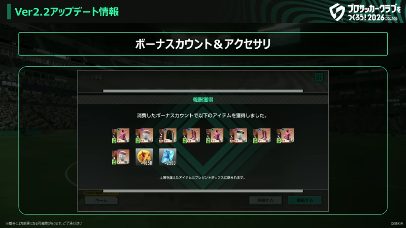
新育成要素「アクセサリー」完全整理｜厳選・強化・セット効果
Ver2.2で最もゲーム性への影響が大きそうなのがアクセサリーです。アクセサリーはSP選手に装備する「外付け強化機能」で、装備した効果はそのSP選手から育成済みの選抜選手にも反映されます。

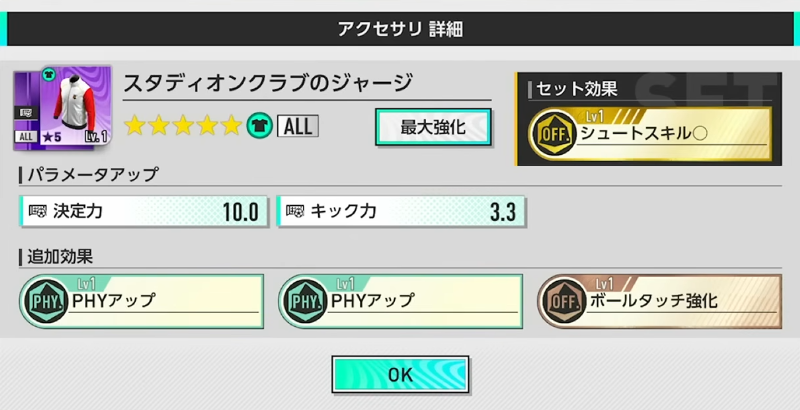

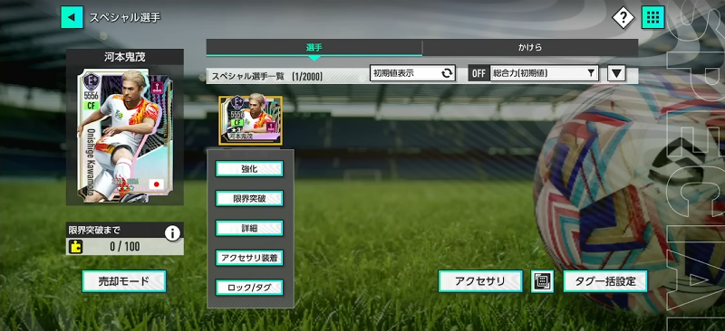
装備枠は「上半身・下半身・ギア」の3種類

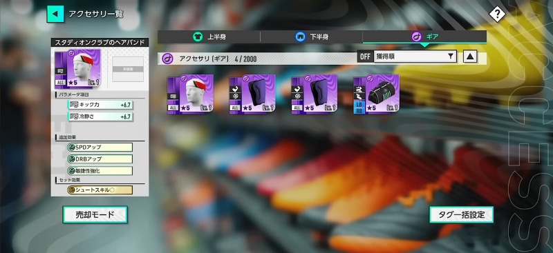

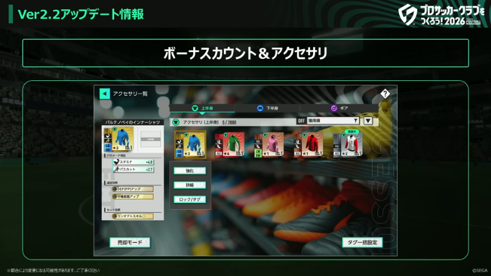
アクセサリーには3種類の装備枠があり、それぞれ上昇するパラメータが異なります。さらに、3部位の組み合わせによってセット効果が発動するものも用意されています。
不要なアクセサリーを素材にして強化｜最大Lv15想定
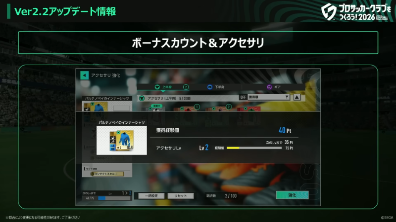
不要なアクセサリーは、残したいアクセサリーの強化素材として使用できます。番組収録時点ではLv15を最大レベルとして想定していると説明されました。
追加効果はランダム｜「金色3つ」の神ドロップを狙う
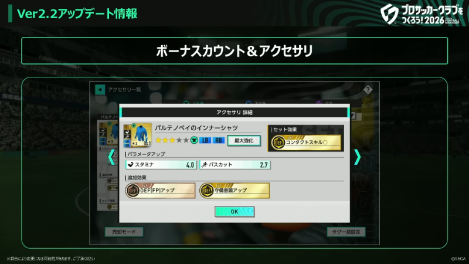
アクセサリーには基本性能だけでなく、ランダムな追加効果が付与されます。番組ではディフェンスアップや守備意識アップなどが例として紹介され、追加効果には色による違いも存在します。開発側からは「金色が3つ付いたアクセサリーを探す」といった厳選の遊び方が示されました。
「点数」は性能を比較するための目安
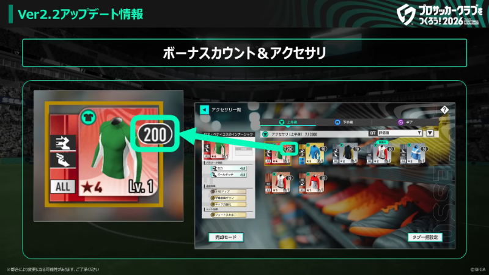
アクセサリーには、性能の良さを大まかに判断する点数が表示されます。ただし「点数が高ければ必ずその選手に最適」という意味ではありません。番組では、190点と180点なら選手によって180点の方が適している可能性もある、と説明されています。
レアリティはサカつくモードのリーグレベルと連動します。番組では「JリーグLv10なら最高レアリティのみがドロップする」といった例が示されました。そのうえで、同じ高レアリティの中から追加効果を厳選していく流れになります。
最大のポイントは「攻撃意識・守備意識」を動かせること
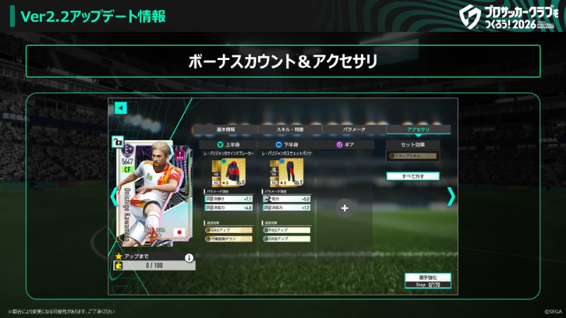
これまで固定的だった攻撃意識・守備意識を、アクセサリーの追加効果で上下させられるようになります。開発側は、意識値が試合中のさまざまな局面に作用していると説明しており、上位対戦では特に影響が大きくなりそうです。
また、意識は単純に上げれば正解というわけではなく、守備意識を下げることで相対的に別の動きが強くなるなど、ダウン効果にも使い道があると説明されています。
番組収録時点では、表示上＋3以上を作れる場合でも、実際の意識変化として効果があるのは＋2までと説明されています。また、各部位に付く意識系効果も一定範囲に制御される予定です。
育成済みの選抜選手にも後から反映される
アクセサリーはSP選手側に紐づくため、すでに選抜登録済みの選手を育成し直す必要はありません。選抜選手側の画面から装備を変更した場合もSP選手側へ反映され、同じSP選手から作られた選抜選手へ再度反映される仕様として説明されました。
アクセサリーは「総合力を少し上げる装備」ではなく、同じSP選手でも試合中の挙動を変えられるカスタマイズ要素です。特にSPECIAL 1vs1では、相手の選手名だけ見ても以前と同じ動きをするとは限らなくなります。今後は「選手性能＋育成結果＋アクセサリー」の3段階で考える必要がありそうです。
直接オファー・継承・編成・UIも改善
直接オファー成功率を改善｜スカウトパワーは監督Lv50まで上昇
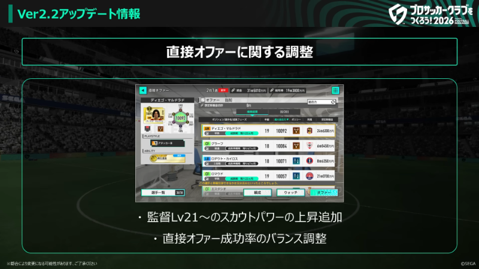
これまで監督Lv20までしか伸びなかったスカウトパワーが監督Lv50まで上昇するようになります。これに合わせて直接オファー成功率も再調整され、監督Lv50まで育てたプレイヤーなら、多くのケースで直接オファーが成立しやすくなる方向で調整中と説明されました。
継承を狙いやすく調整
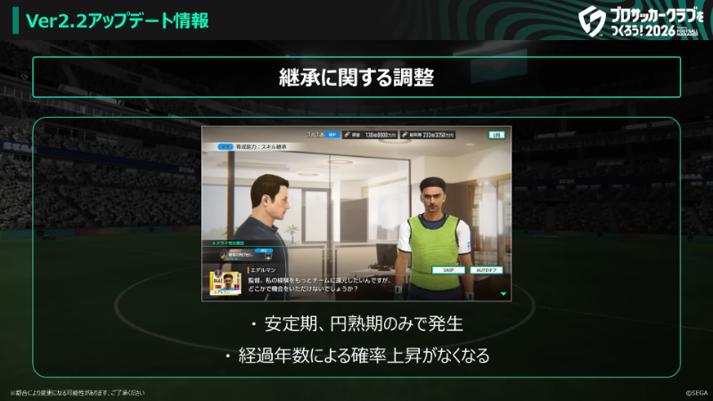
継承については、発生対象となる成長段階を安定期・円熟期に調整し、さらに経過年数による確率上昇を廃止します。番組では、円熟期の対象選手を保有して1シーズンを通してプレイすれば「だいたい発生する」水準を目指して再調整していると説明されました。
選手を獲得しやすくするだけでは、その後に継承で詰まってしまいます。今回は「獲得」→「継承」までをセットで緩和することで、理想の選抜選手を作るサイクル全体を速くする狙いがあります。
第1回最強監督決定戦の称号・選手データを実装
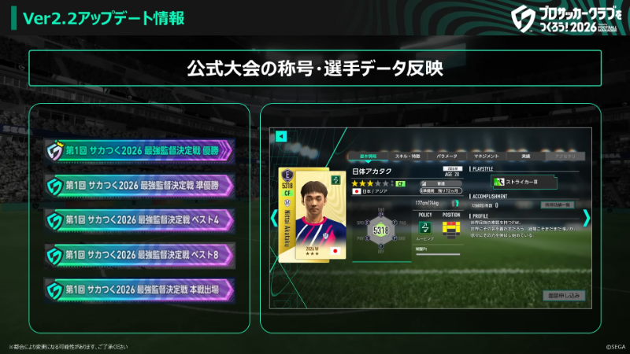
6月7日に開催された第1回公式大会の出場者について、約束されていた専用称号とサカつくモード内の選手データがVer2.2から反映されます。初代最強監督となった優勝者は実際に撮影を行い、3Dモデルも制作。選手性能は大会順位に応じて調整される予定です。
交換所のデザインを見やすく変更
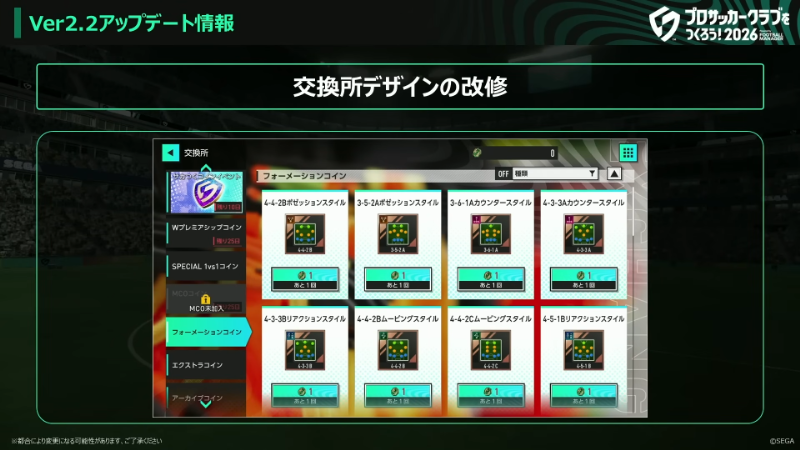
交換所は、縦に並んだバナーを一つずつ開く形式から、左側で交換先を選択して右側に商品を表示するUIへ変更されます。交換所が増えてきた現在の環境では、実用性の高い改善です。
同一選手を複数の選抜編成へ一括反映
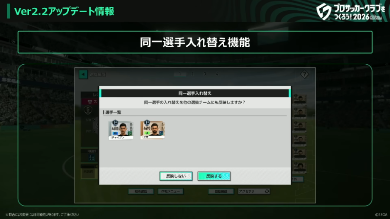
新しく育成した選抜選手へ更新する際、複数の編成を1つずつ差し替える手間を減らす同一選手入れ替え機能が追加されます。一括反映するかどうかは選択可能なため、編成ごとにスキル構成の違う選手を残したい場合にも対応できます。
スキル／特徴の色を見分けやすく調整
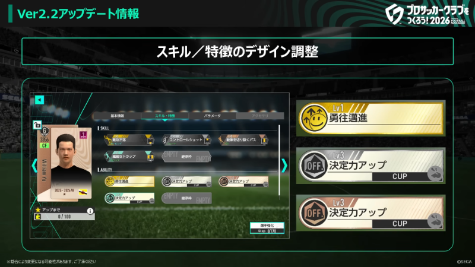
スキルや特徴のランクが見分けづらいという意見を受け、表示色をより明確にするデザイン調整も行われます。
イベント・キャンペーン情報
9月予定「サカつく2026検定」｜攻略知識を問うクイズイベント
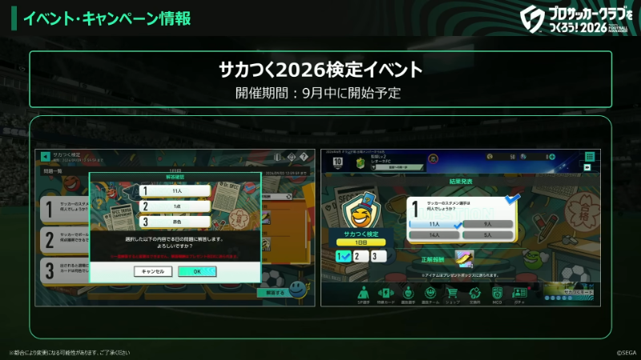
サカつく2026検定は、9月中の開始を予定しているクイズイベントです。ゲーム内で問題に回答し、回答提出時と正解時のそれぞれで報酬が用意されます。
答え合わせは提出直後ではなく翌日。一度提出した回答は変更できないため、難しい問題ではXやDiscordなどでユーザー同士が考察する遊び方も想定されています。

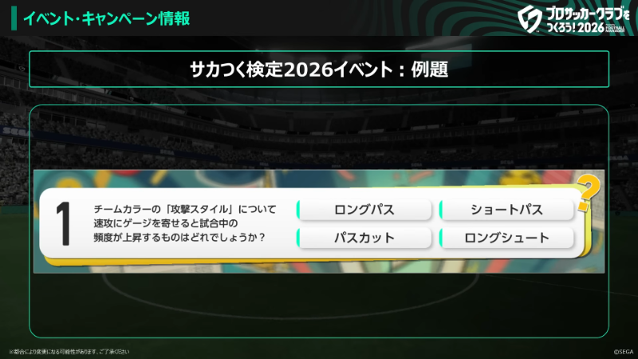

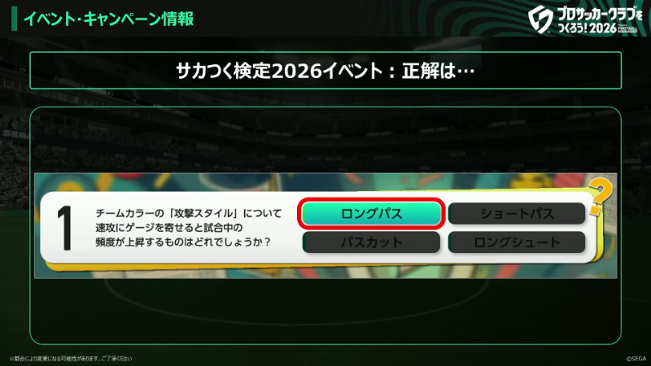
「チームカラーの攻撃スタイルを速攻側へ寄せると、試合中の頻度が上昇するものは？」という問題が出題され、正解はロングパスでした。ゲーム内の細かな仕様を学ぶコンテンツとしても活用されそうです。
サカつくコイン交換所｜限定アクセサリーも交換予定
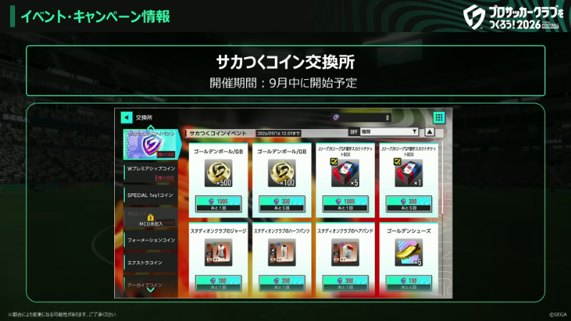
同じく9月中に、サカつくコイン交換所が開催予定です。イベント期間中はボーナスカウントを消費することでサカつくコインを獲得し、期間限定交換所でさまざまなアイテムへ交換できます。
交換対象には、追加効果があらかじめ厳選された限定アクセサリーも予定されています。アクセサリー周回を大量に行うのが難しいプレイヤーにとって、狙ったポジション向けの装備を確保する重要な機会になりそうです。
SP選手枠拡張イベント｜8月26日～9月2日
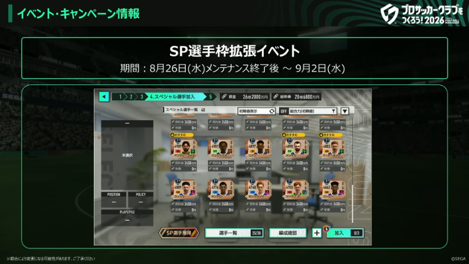
8月26日のメンテナンス終了後から9月2日まで、サカつくモードのSP選手加入枠が1枠追加されるイベントが開催されます。通常より多くのSP選手を同時に編成できるため、育成効率アップが期待できます。
WPS対戦回数リセット半額キャンペーン
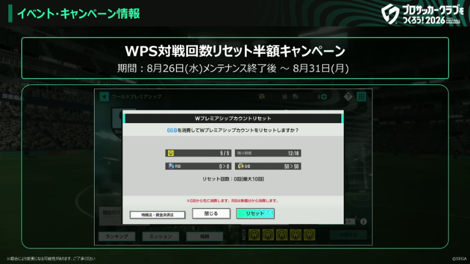
期間中はワールドプレミアシップの対戦回数リセットに必要なGB／RBが半額になります。さらに番組では、1回目のリセットに必要なGBが0になると説明されました。
新ガチャ情報｜スペインSP＆スペシャルピックアップ特練カード
スペインプレミアムSP選手スカウト
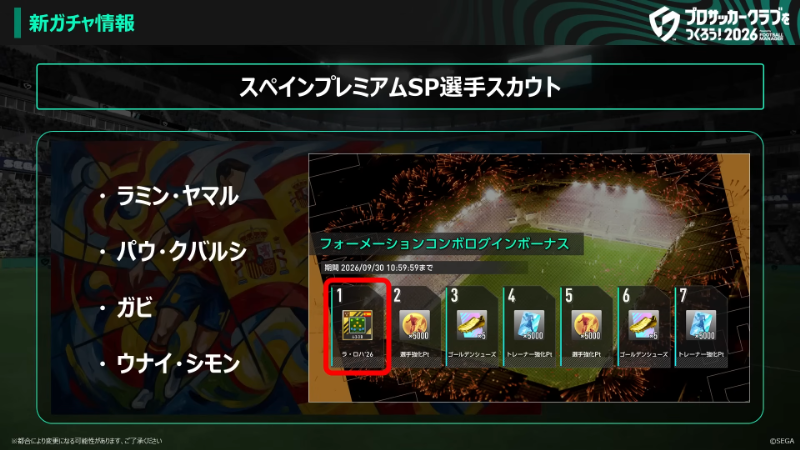
新たなスペインプレミアムSP選手スカウトでは、以下の4選手が登場します。
- ラミン・ヤマル
- パウ・クバルシ
- ガビ
- ウナイ・シモン
あわせて、フォーメーションコンボ「ラ・ロハ'26」を獲得できるログインボーナスも実施予定です。スペイン国籍の編成を強化したい監督は要注目です。
9月2日～「スペシャルピックアップ特練カードガチャ」
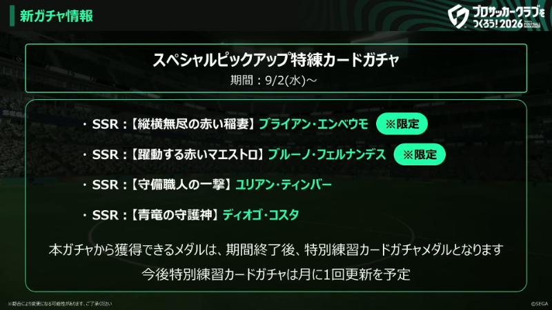
| 選手 | SSR特別練習カード | 区分 |
|---|---|---|
| ブライアン・エンベウモ | 【縦横無尽の赤い稲妻】 | 限定 |
| ブルーノ・フェルナンデス | 【躍動する赤いマエストロ】 | 限定 |
| ユリアン・ティンバー | 【守備職人の一撃】 | 恒常 |
| ディオゴ・コスタ | 【青竜の守護神】 | 恒常 |
今回のガチャから獲得できるメダルは、開催終了後に特別練習カードガチャメダルとなります。また今後、特別練習カードガチャは月1回更新を予定していると発表されました。
公式ストア情報｜アクセス方法と毎月無料プレゼントを更新
公式ストアでは、ゲーム内アイテムやRBを購入でき、一部商品にはストア限定の無償RBなどの特典があります。番組ではPayPay決済の追加にも触れられました。
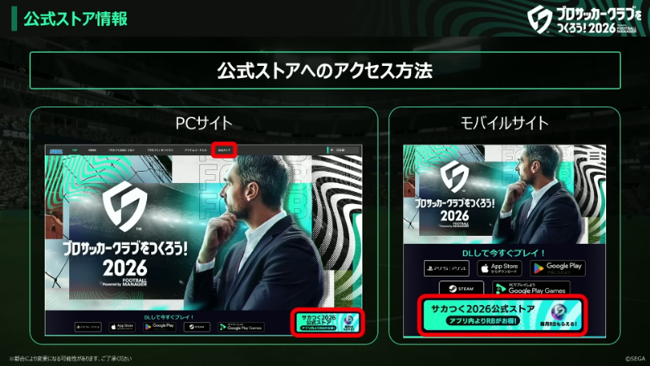
現在はアプリから直接公式ストアへ遷移できないため、ブラウザで公式ストアを開いた後にブックマークやホーム画面のショートカットを作成しておく方法が推奨されました。

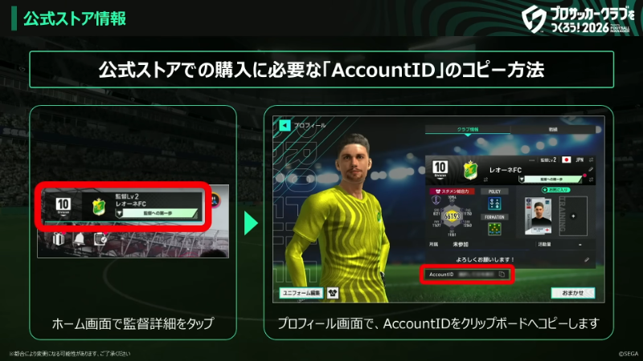

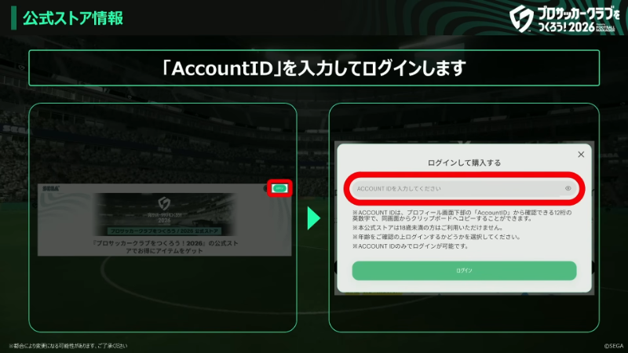
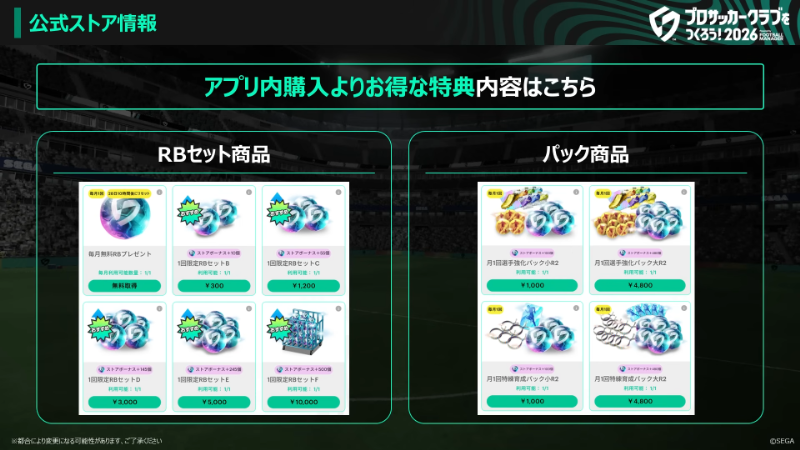
多くの商品にはストア限定の無償RBが付き、毎月1回のプレゼントも用意されています。さらに9月からは、毎月無料RBプレゼントに育成アイテムを追加する予定です。
8月分をすでに受け取ったユーザーへの対応として、8月中は現在の無料RBプレゼントと、9月からの新しいプレゼントが一時的に2つ並ぶ予定と説明されました。
ピザーラ×サカつく2026コラボ｜9月下旬に全国で開催予定
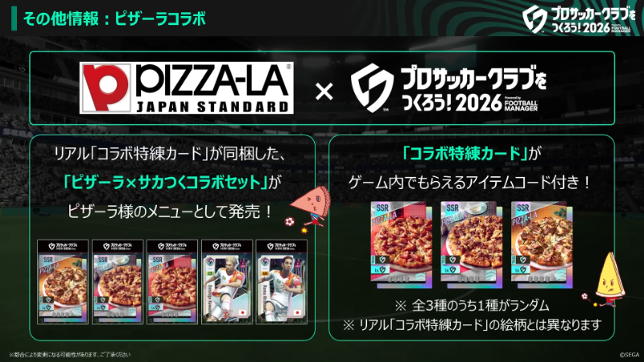
6月の公式オフラインイベントでも協賛したピザーラとのコラボが決定しました。9月下旬から全国のピザーラ店舗で、期間限定の「ピザーラ サカつくコラボセット」が登場する予定です。
- 好きなピザと人気サイドメニューを組み合わせたコラボセット
- ノベルティとしてリアルのサカつく選手カードが付属
- カード裏面のアイテムコードからピザをモチーフにしたコラボ限定特別練習カードを入手可能
- 開催は9月下旬予定。詳細日程は後日発表
- 東京限定ではなく全国のピザーラ店舗で展開予定
最後のサプライズ｜MCセイカさんがゲーム内アシスタントに
番組終盤では、サカつくTVのMCを務めるセイカさんに対して、サカつく2026のゲーム内アシスタントとして正式に実装したいというサプライズ発表が行われました。
3Dモデル制作などに時間が必要なため、番組では10月末～11月頃の実装タイミングを目標に開発を進めたいと説明されています。制作過程についても、次回以降の番組で紹介される可能性があります。
次回「サカつくTV #11」は9月予定
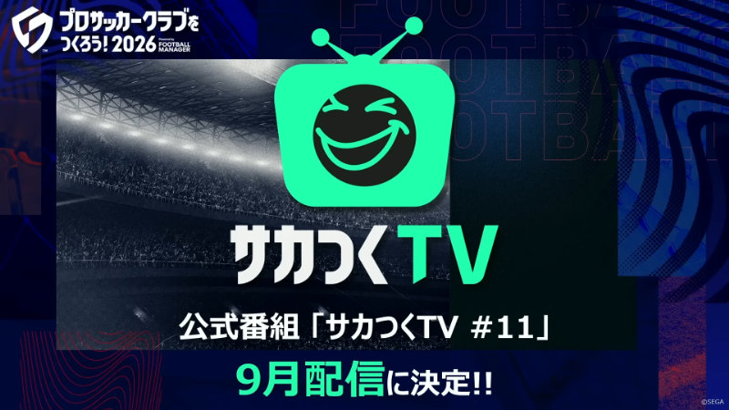
次回のサカつくTV #11では、次のアップデート情報に加えて、今回まだ公開できなかったその後のロードマップを紹介する予定です。
サカつく2026は2026年1月22日にリリースされており、次回放送では2027年1月頃までに何を実施していくのかを説明したいと発表されました。1周年へ向けた中長期ロードマップとして、次回放送はかなり重要になりそうです。
ソニオTVのオレ的注目ポイント
番組内で明確に、複数個のまとめ消費は時短の代わりに効率が下がると説明されました。時間が取れる日は1個ずつ、忙しい日はまとめ消費という使い分けになりそうです。特に無課金ユーザーは時間が許す限り、1個ずつ消費して厳選した方が結果的に最強への近道になりそうです。とは言え「全スキップ+休息によるサカつくモード高速周回」これが最適解になるようであれば個人的にかなりショックです。そうならない事を願ってます。
これまではSP選手本体と育成結果を中心に評価していましたが、今後はアクセサリーの追加効果まで含めて考える必要があります。同じ選手でも神アクセサリを持っているかで性能評価が変わる可能性があるため、今までのような単純な最大総合力ランキングや詳細ステータスだけでは性能比較しきれない事が増えそうです。
欲しい選手が獲得できない、ようやく獲得しても継承が発生しない、という二重の壁をまとめて改善する内容です。アクセサリー集めもサカつくモード周回と結びついているため、Ver2.2では育成そのものを遊びやすくする狙いがかなり強く見えます。
サカつくTVのMCを務めるセイカさんが、ゲーム内アシスタントとして登場予定！過去のアシスタントと同様に、セイカさんを設定してサカつくモードをプレイすると特別な特練カードが入手できるのかなど、今後の続報にも期待したいところです。
さらに、今後もサカつくTVのMCとしてセイカさんが登場することが確定したのもアツい！実装されたら、アシスタントをセイカさんに設定してガチャを引くと神引きする説も、ぜひ検証してみたいです！
Ver2.2自体も大型ですが、次回は1周年付近までのロードマップ公開が予定されています。新機能、イベント、育成、対戦環境がどこへ向かうのかを判断する材料になるため、今回以上に重要な放送になる可能性があります。
まとめ｜Ver2.2は「周回・育成・対戦」の全部に影響するアップデート
サカつくTV #10で発表されたVer2.2では、ボーナスカウントとアクセサリーという新要素が追加されます。特にアクセサリーは、パラメータ強化だけでなく、追加効果、セット効果、攻撃意識・守備意識の変化まで含むため、今後の選手育成と対戦環境を大きく変える可能性があります。
同時に、直接オファーと継承の調整、交換所UI、同一選手入れ替えなど、日々のプレイ負担を軽減する改善も多数実施されます。9月にはサカつく2026検定、サカつくコイン交換所、新しい特別練習カードガチャ、ピザーラコラボなども控えており、Ver2.2以降も新要素が続く予定です。
さらに次回のサカつくTV #11では、2027年1月頃までのロードマップ公開が予定されています。Ver2.2を遊びながら、1周年へ向けた今後の展開にも注目していきましょう。
本記事は2026年8月24日放送の公式番組内で公開された情報をもとに作成しています。画像内にも記載されている通り、開発中の内容は都合により変更となる可能性があります。実装後の正確な仕様・開催期間・報酬・ガチャ詳細はゲーム内のお知らせや監督ノートをご確認ください。
© サカつく2026攻略DB / ソニオTV